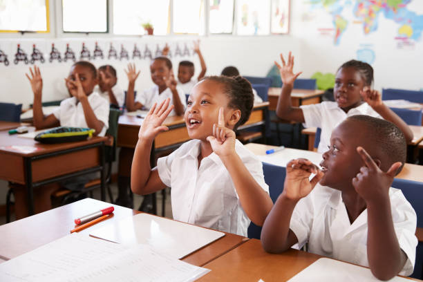
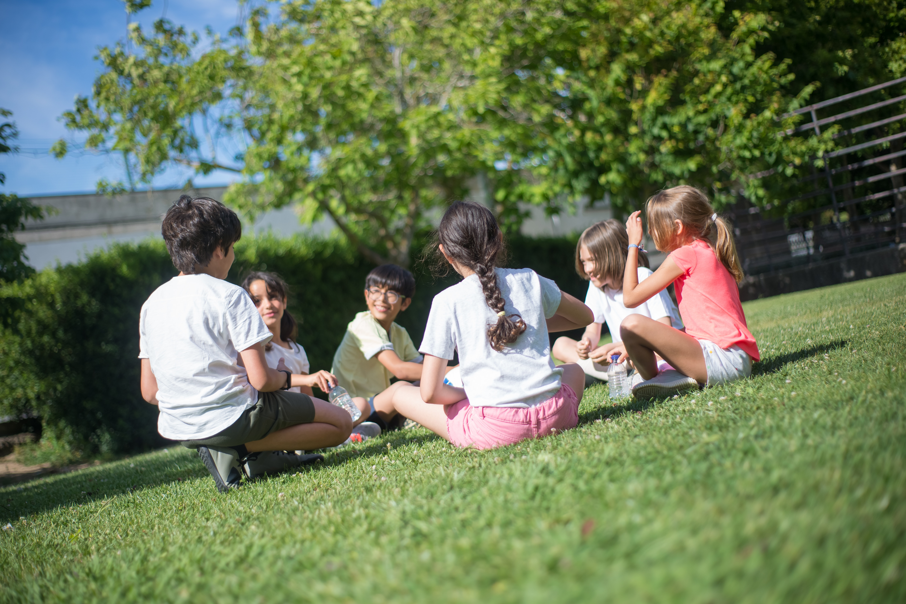
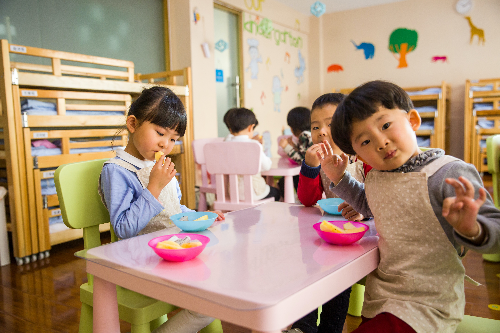

Campus Story
A look into everyday learning, energy, and school atmosphere at Crystal Montessori School.
School Moments
Explore photos and videos from Crystal Montessori School life, from classroom focus to co-curricular energy and memorable community moments.
Short visual highlights from school activities and campus life.
A look into everyday learning, energy, and school atmosphere at Crystal Montessori School.
Moments that reflect participation, confidence, and school engagement.
Another glimpse of the environment, activities, and learner experience.
Featured school scenes that reflect connection, identity, and the wider school community.
A dedicated section for lively school moments, expression, and the spirit of active participation.
A polished visual wall featuring academics, growth, community, and joyful school life.




